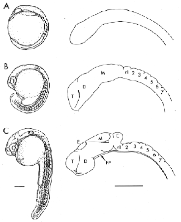

Modified from: Kimmel et al., 1955. Developmental Dynamics 203:253-310. Copyright © 1995 Wiley-Liss, Inc. Reprinted only by permission of Wiley-Liss, a subsidiary of John Wiley & Sons, Inc.
Fig. 23. Sculpturing of the brain rudiment during the segmentation period. A: We do not see morphological subdivisions at the 6-somite stage (12 h). B. By the 18-somite stage (18 h) about 10 neuromeres have developed - the telencephalon (T), diencephalon (D), mesencephalon (M), and about seven hindbrain rhombomeres (r1-r7). C. At prim-5 (24 h) the epiphysis (E) is present in the midline of diencephalic roof, and the ventral diencephalon has expanded as the rudiment of the hypothalamus. The dorsal midbrain, or tectum (M), is now partitioned from the ventral midbrain, or tegmentum. The cerebellum (C) is evident at the hindbrain/midbrain boundary region. The floor plate (FP) extends in the ventral midline up to, but not including the forebrain. From Kimmel (1993). Scale bars: 200 µm.

Figure 23